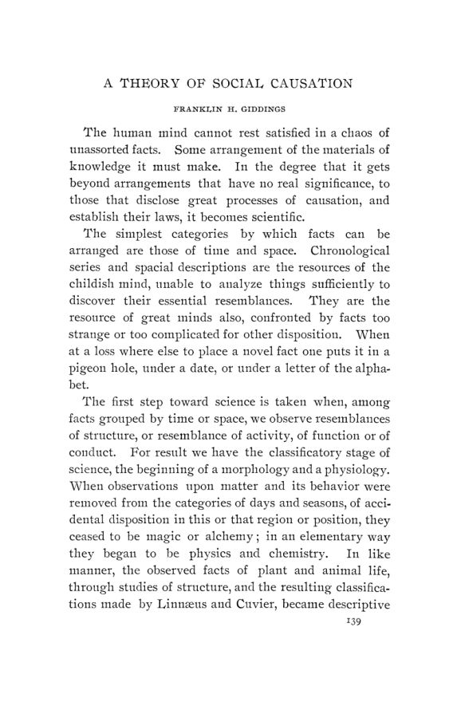

Nova Orleans, 1903 (II): reservas, crédito, trustes e o fisco
Leitura: 6 min
Segunda parte de Nova Orleans: Meade discute a reserva de lucros, Norton formaliza o ganho do crédito, Goodnow a tributação interestadual e Adams nega que trustes sejam produtivos.


Para tomar US$ 2 milhões emprestados, a Philadelphia and Reading teve de depositar US$ 12 milhões em garantias, a maior parte valendo o valor de face. O caso está no trabalho de Edward S. Meade, da University of Pennsylvania, lido na noite de 30 de dezembro de 1903, no salão de banquetes do New St. Charles Hotel, em Nova Orleans, na sessão sobre finanças corporativas e públicas. Meade queria mostrar o risco da dívida flutuante sem garantia específica e a utilidade de uma reserva de títulos fora do negócio.
Esta é a segunda parte dos anais da décima sexta reunião anual da American Economic Association, publicada em maio de 1904 como nº 2 do vol. 5 da terceira série. A primeira parte, com o discurso de Seligman, os trabalhos sobre o Sul e o debate sobre renda e juros, está no nº 69 deste arquivo. Aqui estão as três últimas sessões: finanças corporativas e públicas, o problema dos trustes, na manhã de 31 de dezembro na biblioteca da Tulane University, e a segunda sessão conjunta com a American Historical Association, à noite, no Gibson Hall.
Quanto lucro uma empresa deve guardar?
Meade tratou de onde investir a reserva de lucros, de como dividir as melhorias entre lucros e venda de títulos, do papel da manutenção e da distribuição aos acionistas. Sobre esta, mostrou que a subscrição privilegiada, a venda de ações novas aos acionistas abaixo do preço de mercado, transfere patrimônio sem aparecer nos livros. Os debatedores divergiram: John H. Gray separou serviços públicos de indústrias especulativas; Victor Rosewater pediu publicidade e fiscalização pública como a dos bancos nacionais; Henry Rand Hatfield lembrou que empresas com muita dívida precisam de reservas maiores.
Por que tomar emprestado?
J. Pease Norton, de Yale, respondeu com álgebra. Dividiu os custos em variáveis e fixos, definiu giro, margem e despesa variável e derivou o ganho do crédito: a razão entre capital emprestado e próprio multiplicada pela diferença entre o lucro por giro e a taxa de juros. Num exemplo, títulos de 4% e ações preferenciais de 5% permitiam ao empreendedor retirar seus US$ 10 mil, embolsar parte da “água” e manter o controle. No limite, ironizou, cumprir-se-ia o sonho de alguns promotores:
“uma porcentagem infinita de lucro sobre um investimento zero de capital” (“an infinite percentage of profit on a zero investment of capital”)
Frederick A. Cleveland, da New York University, objetou ao método: raciocínio a priori sobre premissas não demonstradas e uma notação que nem economistas nem o público acompanhariam.
Os estados podem tributar o comércio entre estados?
Frank J. Goodnow, de Columbia, reconstituiu a jurisprudência da Suprema Corte. Impedidos de taxar licenças, mercadorias em trânsito e receitas interestaduais, os estados passaram a tributar a propriedade das empresas pela “regra da unidade de valor”, que avalia os bens pela receita do conjunto. Nos casos das Express Companies, de 1896, bens que valeriam menos de US$ 70 mil foram avaliados em mais de US$ 500 mil. Para Goodnow, isso era tributar o comércio interestadual por via indireta; propôs que o Congresso fixasse um sistema uniforme, como fizera com os bancos nacionais.
O truste é produtivo?
Henry C. Adams, de Michigan, respondeu que não, ao menos na manufatura. Contestou argumentos em defesa dos trustes, entre eles o da concorrência potencial, que só impediria os abusos mais flagrantes, e sustentou que, acima do porte que esgota a divisão do trabalho, a fábrica maior não é mais eficiente. O poder dos trustes estaria na compra de insumos e na venda, sobretudo nas tarifas de transporte. Entre as causas, apontou a escassez de talento empresarial:
“O truste pode ser visto como um açambarcamento de visão, talento e coragem empresariais.” (“The trust may be regarded as a corner in business insight, business talent and business courage.”)
Na sessão final, Franklin H. Giddings, de Columbia, propôs uma teoria da causação social como resposta coletiva a estímulos, das assembleias das antigas leis de Gales aos ideais de unidade, liberdade e igualdade. Albion W. Small, Charles Horton Cooley, Lester F. Ward e historiadores da associação irmã comentaram.
Na minha leitura
Na minha leitura, a sessão de finanças é a parte mais moderna do volume. A fórmula de Norton é, em substância, a equação da alavancagem financeira: o retorno sobre o capital próprio cresce com a dívida enquanto o retorno do negócio supera o custo do empréstimo, e cai na mesma proporção quando não supera. O complemento está em Hatfield: com metade do capital em títulos, a mesma oscilação do resultado operacional produz oscilação muito maior no lucro do acionista. A crítica de Cleveland antecipa um debate de método que nunca se encerrou: formalizar ajuda a pensar com precisão, mas não substitui a verificação nos dados.
O trabalho de Adams desloca a questão do monopólio da fábrica para o mercado. Se a escala ótima de produção é limitada, o poder vem do acesso a transporte, insumos e canais de venda, e é aí que a política deve atuar. O argumento sobre concorrência potencial é uma análise de barreiras à entrada: tempo de construção, aprendizado, gestores e clientela. A mesma lógica aparece em Goodnow, em outro plano: quando a regra formal impede um tributo, o fisco encontra uma base equivalente, e a uniformidade só vem de uma regra comum.
Glossário
- Reserva de lucros (surplus reserve)
- lucros acumulados não distribuídos; excesso do ativo sobre o passivo.
- Ativos livres
- títulos ou bens não essenciais à operação, que podem ser vendidos ou dados em garantia sem prejudicar o negócio.
- Dívida flutuante
- dívida de curto prazo sem garantia específica, que precisa ser renovada.
- Subscrição privilegiada
- oferta de ações novas aos acionistas atuais abaixo do preço de mercado.
- Giro do capital
- número de vezes que o capital se converte em vendas num período.
- Água (nas ações)
- parcela do capital emitido que excede o valor dos ativos, apoiada só na expectativa de lucros.
- Cláusula de comércio
- dispositivo da Constituição americana que dá ao Congresso poder de regular o comércio entre os estados.
- Regra da unidade de valor
- método de avaliar a propriedade de uma empresa interestadual como fração do valor do conjunto, medido pela receita.
- Concorrência potencial
- ameaça de entrada de novos produtores, que limita o preço que uma empresa dominante pode cobrar.
Artigos desta edição
- The Management of the Surplus Reserve — Edward S. Meade (University of Pennsylvania) (pp. 1–16). Meade define a reserva de lucros como excesso do ativo sobre o passivo, acumulado depois de juros e dividendos, e examina quatro questões. Sugere investir parte dela em títulos sem relação com o negócio, “ativos livres” que dariam renda estável e garantia para empréstimos, citando casos em que ferrovias precisaram empenhar muito mais do que tomavam. Endossa a regra de Stephen Little: só vai à conta de capital o gasto que aumente a receita cedo; o resto sai dos lucros. Defende que gastos altos de manutenção em anos bons compensam a falta de contas de depreciação. Mostra que a subscrição privilegiada distribui patrimônio sem aparecer nos livros e eleva o retorno efetivo das ações. JSTOR
- The Management of the Surplus Reserve-Discussion — John H. Gray (Northwestern University), Victor Rosewater (Omaha) e Henry Rand Hatfield (Chicago University) (pp. 17–33). Gray distingue serviços públicos de indústrias especulativas; Rosewater trata a reserva como dividendo diferido e pede publicidade e fiscalização pública; Hatfield liga o tamanho da reserva à estrutura de capital. JSTOR
- The Theory of Loan Credit in Relation to Corporation Economics — J. Pease Norton (Yale University) (pp. 34–56). Norton propõe estudar a distribuição do controle da riqueza produtiva. Separa bens “competitivos”, que o comprador consegue graduar e comparar, dos “não competitivos”, maioria vendida segundo uma política de preços que maximiza o lucro total; marcas, embalagens e publicidade serviriam para tornar não competitivo o que era competitivo. Com uma tabela de variáveis, deriva o ganho de usar crédito: a razão entre capital emprestado e próprio multiplicada pela diferença entre o lucro por giro e a taxa de juros. Aplica curvas de probabilidade ao risco de não pagar juros, explica por esse ângulo a “água” das ações e pede educação do investidor sobre os riscos das ações ordinárias. JSTOR
- The Theory of Loan Credit in Relation to Corporation Economics-Discussion — Frederick A. Cleveland (New York University) (pp. 57–62). Cleveland critica o método a priori e a linguagem matemática de Norton e defende pesquisa empírica como base da ciência econômica. JSTOR
- State Taxation of Interstate Commerce — Frank J. Goodnow (Columbia University) (pp. 63–85). Goodnow reconstitui a jurisprudência da Suprema Corte sobre a cláusula de comércio, de Gibbons vs. Ogden, de 1824, ao caso Cooley, de 1851, e seguintes: o poder do Congresso é exclusivo nas matérias que pedem regra uniforme, sua inação equivale a proibir regulação, e tributar é regular. Os estados perderam quase todas as tentativas de taxar licenças, mercadorias em trânsito e receitas interestaduais, mas a partir de cerca de 1880 passaram a tributar a propriedade das empresas pela “regra da unidade de valor”. Nos casos das Express Companies, de 1896, bens de menos de US$ 70 mil foram avaliados em mais de US$ 500 mil. Propõe que o Congresso fixe um sistema uniforme, como fez com os bancos nacionais. JSTOR
- State Taxation of Interstate Commerce-Discussion — Winthrop M. Daniels (Princeton University), Frederick N. Judson (St. Louis) e Carl C. Plehn (University of California) (pp. 86–90). Judson separa tributação do comércio e da propriedade usada nele; da fala de Daniels sai só um resumo; Plehn concorda com Goodnow sobre o poder do Congresso. JSTOR
- Trusts — Henry C. Adams (University of Michigan) (pp. 91–107). Adams define truste como indústria que, pelo tamanho ou pela organização, domina a produção ou a venda de seus bens, e examina os argumentos a seu favor. A evolução histórica, diz, sempre exigiu novas regras legais; a concorrência entre mercadorias e a concorrência potencial só impedem os abusos mais flagrantes, porque entrar num mercado exige tempo, gestores e clientela. Sustenta que a manufatura opera com rendimentos constantes acima de certo porte e que a consolidação nasce de donos de fábricas inferiores que buscam proteger seu capital. Aponta três causas a atacar: escassez de talento empresarial, que pede ensino comercial superior; tarifas ferroviárias, até a nacionalização se preciso; e a relação entre sindicatos e concentração. JSTOR
- Trusts-Discussion — Balthasar H. Meyer, James Edward Le Rossignol, Edward W. Bemis, Maurice H. Robinson, W. G. Langworthy Taylor, Jacob H. Hollander, Thomas N. Carver e Henry W. Farnam (pp. 108–137). Os debatedores discutem as economias da grande escala, a supercapitalização e as bases teóricas do monopólio; Farnam resume a discussão. JSTOR
- A Theory of Social Causation — Franklin H. Giddings (Columbia University) (pp. 139–174). Giddings propõe tratar a causação social como processo psicofísico: instituições e eventos históricos seriam respostas coletivas a estímulos, condicionadas pela semelhança ou diferença entre as mentes que respondem. Ilustra com as tríades das antigas leis de Gales, que descrevem assembleias convocadas por trompa ou grito. Classifica quatro tipos de ambiente, conforme a riqueza de recursos e o acesso, e relaciona cada um à composição da população, às formas de cooperação e aos laços sociais. Examina três ideais, unidade, liberdade e igualdade, como estímulos que transformam a cooperação coercitiva em liberal e democrática, e conclui que cada tipo de comunidade produz um tipo de teoria social. JSTOR
- A Theory of Social Causation Discussion — Albion W. Small, Charles Horton Cooley, Lester F. Ward, George L. Burr, Willis Mason West e Franklin H. Giddings (pp. 175–199). Sociólogos e historiadores comentam a teoria na segunda sessão conjunta com a American Historical Association; Giddings encerra. JSTOR
Fontes
- The Management of the Surplus Reserve (pp. 1–16). JSTOR · Internet Archive (PDF)
- The Management of the Surplus Reserve-Discussion (pp. 17–33). JSTOR · Internet Archive (PDF)
- The Theory of Loan Credit in Relation to Corporation Economics (pp. 34–56). JSTOR · Internet Archive (PDF)
- The Theory of Loan Credit in Relation to Corporation Economics-Discussion (pp. 57–62). JSTOR · Internet Archive (PDF)
- State Taxation of Interstate Commerce (pp. 63–85). JSTOR · Internet Archive (PDF)
- State Taxation of Interstate Commerce-Discussion (pp. 86–90). JSTOR · Internet Archive (PDF)
- Trusts (pp. 91–107). JSTOR · Internet Archive (PDF)
- Trusts-Discussion (pp. 108–137). JSTOR · Internet Archive (PDF)
- A Theory of Social Causation (pp. 139–174). JSTOR · Internet Archive (PDF)
- A Theory of Social Causation Discussion (pp. 175–199). JSTOR · Internet Archive (PDF)
- Sumário da edição no JSTOR: Publications of the American Economic Association, 3ª série, vol. 5, nº 2.
Documento em domínio público (EUA, publicado antes de 1931), via JSTOR Early Journal Content e Internet Archive. Resumo e comentário do autor deste site, sem afiliação com a American Economic Association. Encontrou um erro? Escreva: a correção é publicada no próprio texto, com data.
← Nº 69 · Nova Orleans, 1903: o Sul agrícola, Seligman e o destino do imposto Nº 71 · Walker, 1904: por dentro do cartel do carvão do Ruhr →